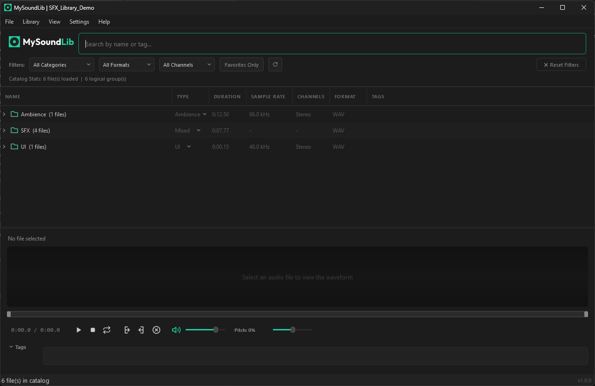
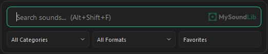
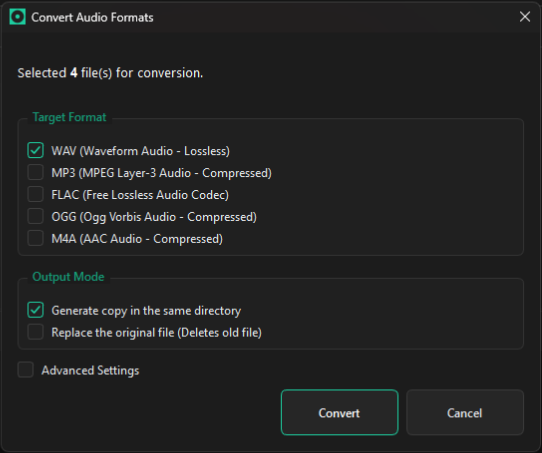

Your OS file search is terrible for audio. MySoundLib fixes that.
A lightweight, local desktop app to organize gigabytes of SFX and music, preview and trim waveforms instantly, and drop audio straight into your timeline in 2 seconds flat.

How it works
Finding audio in video editors is usually five slow steps: open nested folders, wait for a media player, scrub the file, clutter the project bin. MySoundLib turns that into one direct shortcut.
Hit Alt + Shift + F anywhere on your system. A fast search bar pops up right over Premiere, DaVinci, or CapCut without switching windows.
Hit spacebar to hear the waveform. Select only the transient or tail you need and drag that exact snippet straight into your timeline.
You stay in your creative flow. No raw 12-second files cluttering your bin, no waiting on media players, no wasted editing minutes.
Why I built this
The tedious loop every video editor gets stuck in
How 5 minutes gets wasted on a single sound effect:
You download another 5GB sound pack that claims to be "super organized."
You open the folder and find whoosh_sub_final_v2.wav buried under six subfolders.
You double-click it, waiting for your default media player to slowly boot up.
The sound is 12 seconds long, but you only need the tiny transient at the tail end.
You drag the entire raw file into your project bin, clutter your timeline, slice it down, and repeat 80 times per edit.
Eventually, you give up and just use the same 4 sounds sitting on your desktop.
01 Global Overlay
Search sounds over your timeline.
Hit Alt + Shift + F over Premiere, DaVinci, or CapCut. Search, preview on spacebar, and drop audio straight into your track without leaving your editor.
- 01 Global hotkey: pops up instantly over any NLE.
- 02 Instant search: indexes 100k+ local files with zero lag.
- 03 Quick filters: filter by format, channels, or custom tags.

02 Pillar / Precision Trimming
Preview on spacebar, drag only the section you need.
Hit spacebar for instantaneous waveform playback. Drag your cursor across the waveform to select just the transient, riser impact, or tail, and drop only that selected clip straight into your timeline.
- 01 In-app trimming: stop slicing 12-second raw audio files on your video timeline.
- 02 Pitch & speed controls: adjust playback pitch on the fly before exporting.
- 03 Clean timeline bin: keep your NLE project files lightweight and uncluttered.
03 Pillar / Built-in Converter & Sync
Auto folder sync and one-click audio format conversion.
Point the app to your downloads folder or audio library. When you download a new sound pack, hit refresh and it is instantly indexed. Got an incompatible .flac or .ogg? Convert it to clean .wav inside the app with one click before dragging it into your NLE.
- 01 Auto folder sync: auto-detects new additions, edits, and deletions on disk.
- 02 Multi-format converter: WAV, MP3, FLAC, OGG, and M4A supported natively.
- 03 Multiple libraries: keep YouTube sound assets separate from commercial client libraries.

We spent years digging through messy 5GB sound packs. Then we built the tool we actually wanted underneath.Why I built MySoundLib
Compatibility
Works with whatever you already use to edit
MySoundLib does not require buggy plugins or bloated extensions. If your software supports basic drag-and-drop, it works out of the box:
About the project
I edit videos and design for a living too.
I built MySoundLib because I needed it. I am a video editor and graphic designer. I have been through this exact folder-hunting loop thousands of times, and at some point I got tired enough to actually build the fix.
This is not a startup. There is no team behind it, no VC money, no growth roadmap. It is software made by one person who uses it daily. Updates roll out with an emphasis on rock-solid stability rather than rushed sprint deadlines. Your audio files never leave your machine. And if something breaks, I actually want to hear about it.
Your audio files never get uploaded to anyone else's cloud server.
No subscriptions, no recurring bills, all upcoming patches included.
Works natively across Windows, macOS, and Linux with any NLE or DAW.
FAQ
Questions & Answers
Which editors and DAWs are supported?
Premiere, DaVinci Resolve, CapCut, After Effects, Final Cut, Reaper, Ableton, and FL Studio. If your software supports drag-and-drop from your desktop, it works natively.
Does dragging snippets modify my original audio files?
No. Waveform trimming is 100% non-destructive. It generates a temporary audio clip for your timeline while leaving your source files intact.
Is the $19 purchase a lifetime license or subscription?
One-time payment. You pay $19 once and own MySoundLib forever, including all upcoming v1 updates. No subscriptions or recurring fees.
How does the global search shortcut work?
Press Alt + Shift + F (or Cmd + Shift + F on macOS) over your editor. A fast search bar appears, you preview audio with spacebar, drag the clip into your timeline, and keep editing.
Are my sound files uploaded to the cloud or analyzed?
Never. MySoundLib runs 100% locally on your computer. Your audio libraries, folder paths, and project files never leave your disk.
Which audio formats does it read and convert?
WAV, MP3, FLAC, OGG, OPUS, AIFF, and M4A/AAC. It also includes an instant one-click batch converter to clean WAV.
Can I organize sounds into separate libraries?
Yes. You can create distinct libraries for YouTube SFX, commercial client projects, or music packs, indexing thousands of files in milliseconds.
How many machines can I activate with one license?
Each license key can be activated on up to 5 personal machines (e.g., your desktop workstation, home setup, and laptops).
Stop digging through folders. Keep editing.
Instant download link and license key delivered via email. Runs natively on Windows, macOS, and Linux.